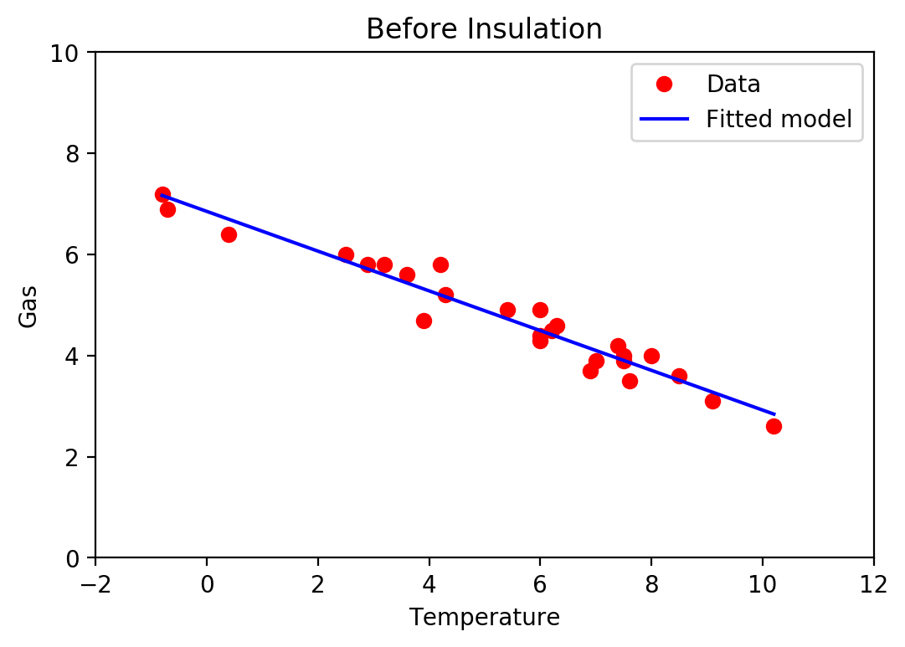
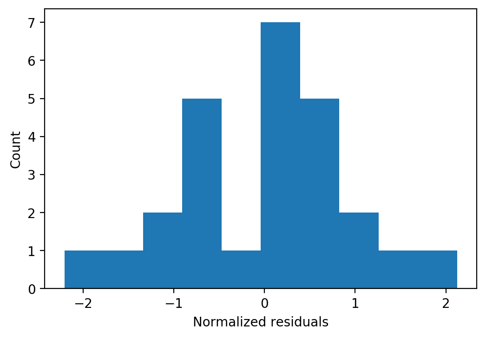
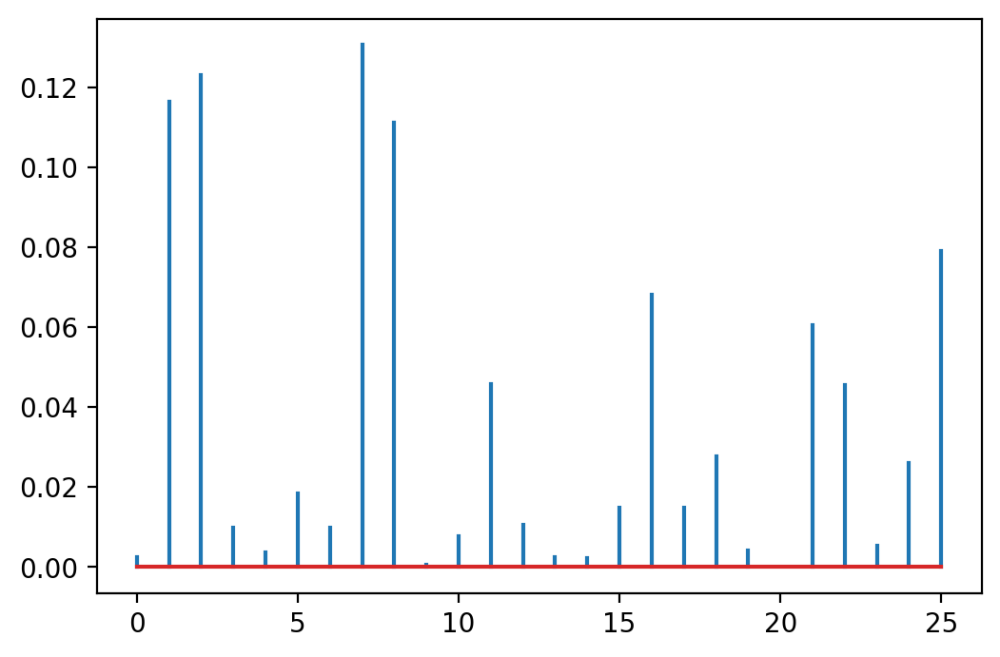
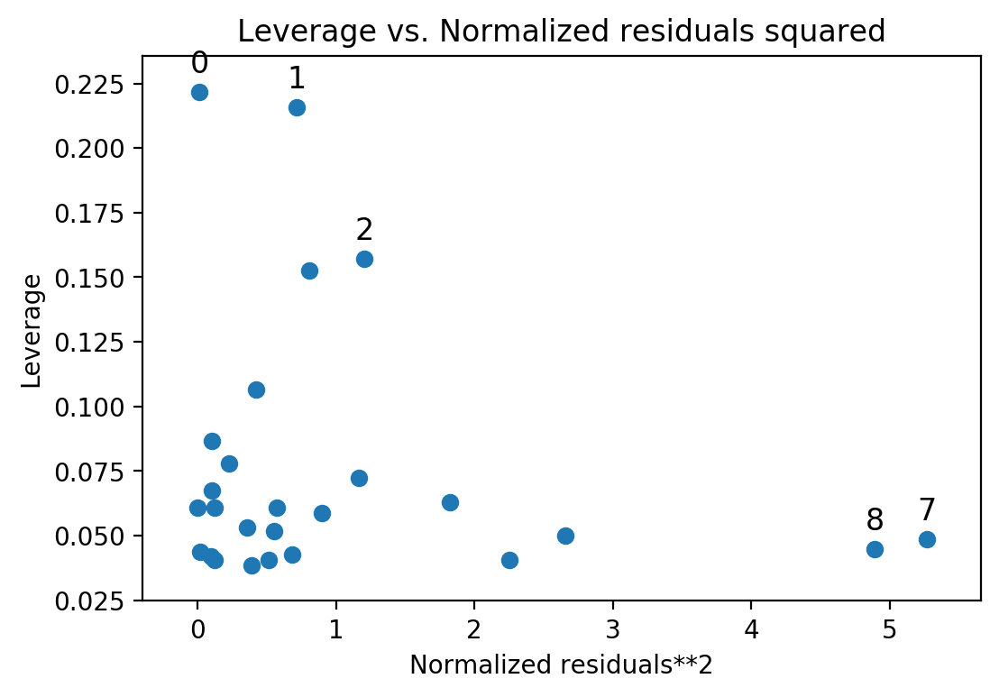
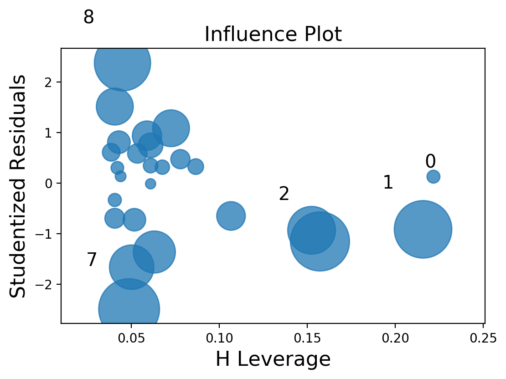

% Linear Regression model with Python % Matti Pastell % 19.4.2013
Requirements
This en example of doing linear regression analysis using Python and statsmodels. We'll use the new formula API which makes fitting the models very familiar for R users. You'll also need Numpy, Pandas and matplolib.
The analysis can be published using Pweave 0.22 and later.
Import libraries
import pandas as pd import numpy as np import statsmodels.formula.api as sm import statsmodels import matplotlib.pyplot as plt
Statsmodels api seems to change often, check release version:
statsmodels.__version__
'0.10.0'
We'll use whiteside dataset from R package MASS. You can read the description of the dataset from the link, but in short it contains:
The weekly gas consumption and average external temperature at a house in south-east England for two heating seasons, one of 26 weeks before, and one of 30 weeks after cavity-wall insulation was installed.
Load dataset using Pandas:
url = 'https://raw.githubusercontent.com/mpastell/Rdatasets/master/csv/MASS/whiteside.csv' whiteside = pd.read_csv(url)
Fitting the model
Let's see what the relationship between the gas consumption is before the insulation. See statsmodels documentation for more information about the syntax.
model = sm.ols(formula='Gas ~ Temp', data=whiteside, subset = whiteside['Insul']=="Before") fitted = model.fit() print(fitted.summary())
OLS Regression Results ============================================================================== Dep. Variable: Gas R-squared: 0.944 Model: OLS Adj. R-squared: 0.941 Method: Least Squares F-statistic: 403.1 Date: Wed, 07 Aug 2019 Prob (F-statistic): 1.64e-16 Time: 21:59:50 Log-Likelihood: -2.8783 No. Observations: 26 AIC: 9.757 Df Residuals: 24 BIC: 12.27 Df Model: 1 Covariance Type: nonrobust ============================================================================== coef std err t P>|t| [0.025 0.975] ------------------------------------------------------------------------------ Intercept 6.8538 0.118 57.876 0.000 6.609 7.098 Temp -0.3932 0.020 -20.078 0.000 -0.434 -0.353 ============================================================================== Omnibus: 0.296 Durbin-Watson: 2.420 Prob(Omnibus): 0.862 Jarque-Bera (JB): 0.164 Skew: -0.177 Prob(JB): 0.921 Kurtosis: 2.839 Cond. No. 13.3 ============================================================================== Warnings: [1] Standard Errors assume that the covariance matrix of the errors is correctly specified.
Plot the data and fit
Before = whiteside[whiteside["Insul"] == "Before"] plt.plot(Before["Temp"], Before["Gas"], 'ro') plt.plot(Before["Temp"], fitted.fittedvalues, 'b') plt.legend(['Data', 'Fitted model']) plt.ylim(0, 10) plt.xlim(-2, 12) plt.xlabel('Temperature') plt.ylabel('Gas') plt.title('Before Insulation')
Text(0.5, 1.0, 'Before Insulation')
\
Fit diagnostiscs
Statsmodels OLSresults objects contain the usual diagnostic information about the model and you can use the get_influence() method to get more diagnostic information (such as Cook's distance).
A look at the residuals
Histogram of normalized residuals
plt.hist(fitted.resid_pearson) plt.ylabel('Count') plt.xlabel('Normalized residuals')
Text(0.5, 0, 'Normalized residuals')
\
Cooks distance
OLSInfluence objects contain more diagnostic information
influence = fitted.get_influence() #c is the distance and p is p-value (c, p) = influence.cooks_distance plt.stem(np.arange(len(c)), c, markerfmt=",")
G:\Installed\Anaconda3\Scripts\pweave:4: UserWarning: In Matplotlib 3.3 individual lines on a stem plot will be added as a LineCollection instead of individual lines. This significantly improves the performance of a stem plot. To remove this warning and switch to the new behaviour, set the "use_line_collection" keyword argument to True.
<StemContainer object of 3 artists>
\
Statsmodels builtin plots
Statsmodels includes a some builtin function for plotting residuals against leverage:
from statsmodels.graphics.regressionplots import * plot_leverage_resid2(fitted) influence_plot(fitted)
\ \